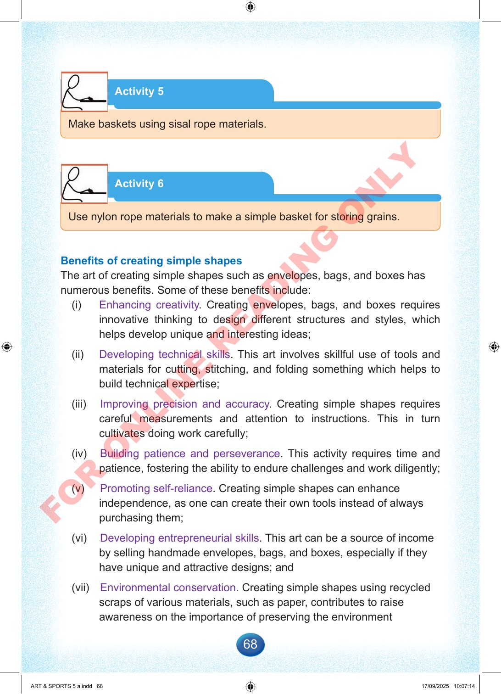

68
Activity
5
Make
baskets
using
sisal
rope
materials.
Activity
6
Use
nylon
rope
materials
to
make
a
simple
basket
for
storing
grains.
Benefits
of
creating
simple
shapes
The
art
of
creating
simple
shapes
such
as
envelopes,
bags,
and
boxes
has
numerous
benefits.
Some
of
these
benefits
include:
(i)
Enhancing
creativity.
Creating
envelopes,
bags,
and
boxes
requires
innovative
thinking
to
design
different
structures
and
styles,
which
helps
develop
unique
and
interesting
ideas;
(ii)
Developing
technical
skills.
This
art
involves
skillful
use
of
tools
and
materials
for
cutting,
stitching,
and
folding
something
which
helps
to
build
technical
expertise;
(iii)
Improving
precision
and
accuracy.
Creating
simple
shapes
requires
careful
measurements
and
attention
to
instructions.
This
in
turn
cultivates
doing
work
carefully;
(iv)
Building
patience
and
perseverance.
This
activity
requires
time
and
patience,
fostering
the
ability
to
endure
challenges
and
work
diligently;
(v)
Promoting
self-reliance.
Creating
simple
shapes
can
enhance
independence,
as
one
can
create
their
own
tools
instead
of
always
purchasing
them;
(vi)
Developing
entrepreneurial
skills.
This
art
can
be
a
source
of
income
by
selling
handmade
envelopes,
bags,
and
boxes,
especially
if
they
have
unique
and
attractive
designs;
and
(vii)
Environmental
conservation.
Creating
simple
shapes
using
recycled
scraps
of
various
materials,
such
as
paper,
contributes
to
raise
awareness
on
the
importance
of
preserving
the
environment
ART
&
SPORTS
5
a.indd
68
ART
&
SPORTS
5
a.indd
68
17/09/2025
10:07:14
17/09/2025
10:07:14
F
O
R
O
N
L
I
N
E
R
E
A
D
I
N
G
O
N
L
Y